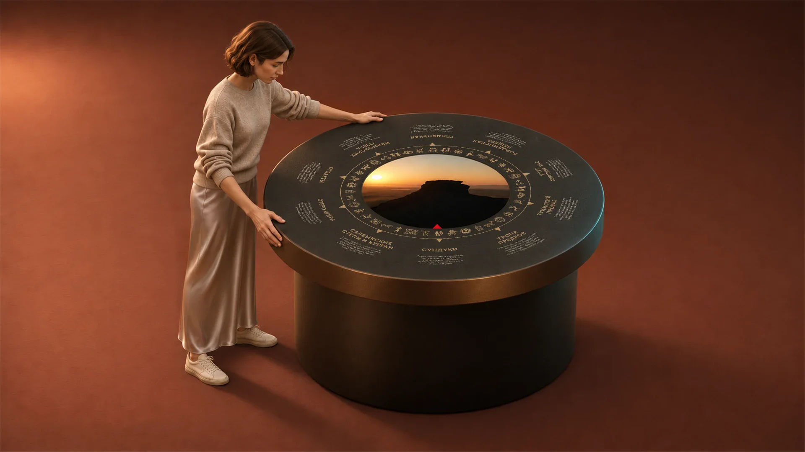
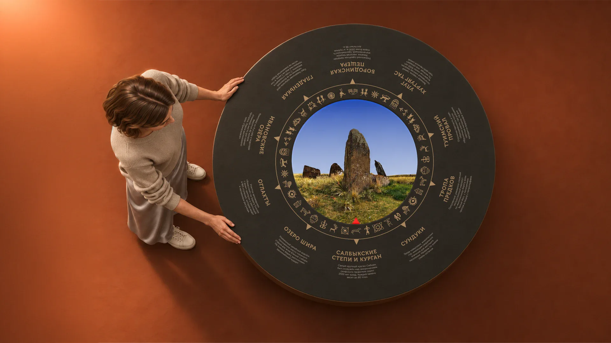
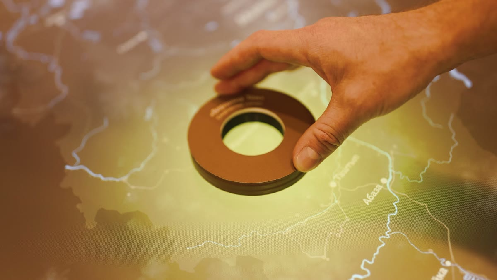

Интерактивный стол для выставки
«Россия» на ВДНХ
Достопримечательности Хакасии

Задача
Показать достопримечательности Хакасии в интерактивном формате. Дать посетителям возможность самостоятельно выбирать места и знакомиться с ними через видео и 3D-сцены.
Решение
Круглый интерактивный стол с вращающимся кольцом и экраном в центре. Посетитель поворачивает кольцо, совмещает название места с указателем, и на экране появляется соответствующая история.
Этот экспонат стал частью нашего большого проекта для стенда Республики Хакасия на выставке «Россия»

На крышке стола расположены названия достопримечательностей Хакасии, короткие описания и графические символы. Посетитель поворачивает кольцо и совмещает выбранное место с указателем. На экране в центре появляется соответствующий видеосюжет.
10 мест на столе
- Гладенькая
- Бородинская пещера
- Улуг Хуртуях Тас
- Туимский провал
- Тропа предков
- Сундуки
- Салбыкские степи и курган
- Озеро Шира
- Оглахты
- Ивановские озера

Чтобы переключать контент, нужно было надежно определять положение кольца
Мы рассматривали энкодер, но у него две проблемы: механические части и сложность запоминания начального угла. Поэтому мы использовали RFID-метки.
с RFID-
метками Считыватель
карт
Все держится на металлической конструкции, верхняя часть которой свободно вращается. На ней закреплены 10 карточек с RFID-чипами. Они проходят мимо неподвижного считывателя, он посылает сигнал в компьютер, и запускается нужный сюжет. Такое решение не требует механической связи кольца с датчиком. Это было важно для экспоната, который работал на выставке около полугода.
При сборке стола выяснилось, что металлический каркас мешает работе RFID-датчика. Чтобы добиться стабильного считывания, пришлось дополнительно экранировать датчик и провода
Трехмерная карта Хакасии сделана в Cinema 4D. Анимации всех меток мы настроили заранее, а камера летает между ними. Чтобы при каждом пролете она возвращалась в правильное положение, мы разработали риг: он управляет только высотой подъема камеры и точкой, на которую она смотрит. Так движение получается плавным, а внимание остается на объекте.

Сделаем похожий интерактивный стол для вашего музея или выставки — со своими местами, картой и сюжетами
Обсудить проектСтенд Хакасии на выставке «Россия»
Для стенда Республики Хакасия мы сделали три интерактивных экспоната: этот стол, игру про менгиры и карту достижений республики. Для всех трех мы рисовали графику и писали код: он управляет поворотом круглого стола, подсветкой менгира и столом Displax, который распознает фишки.
-

Достижения Хакасии Пять фишек с названиями достижений. Чем ближе фишка к нужному месту на карте, тем зеленее подсветка
Есть проект экспозиции или задача по отдельному экспонату?
Пришлите материалы и сроки — обсудим. Даем скидку за срочность